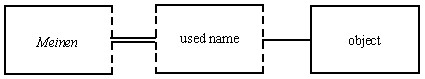
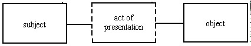
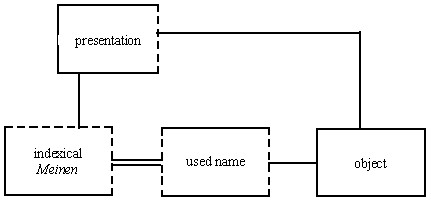
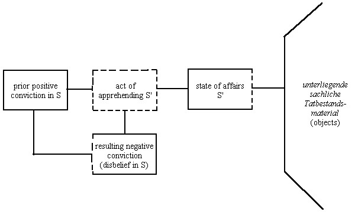
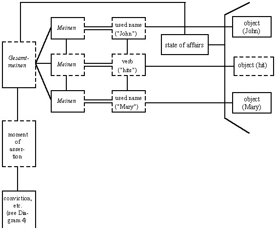
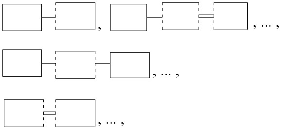
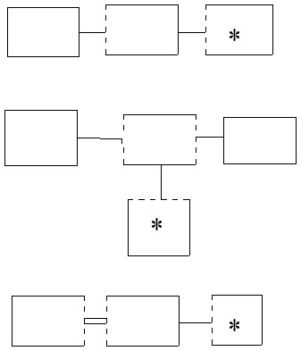

On the Cognition of States of Affairs
Barry Smith(1)
phismith@acsu.buffalo.edu
From K. Mulligan, ed., Speech Act and Sachverhalt: Reinach and the Foundations of Realist Phenomenology, Dordrecht/Boston/Lancaster: Nijhoff (1987), 189-225.
PART ONE: NAMES AND OBJECTS
1. Standard and Non-Standard Instances
The theory of speech acts put forward by Reinach in his "The A Priori Foundations of the Civil Law" rests on a systematic account of the ontological structures associated with various different sorts of language use. One of the most original features of Reinach's account likes in his demonstration of how the ontological structure of, say, an action of promising or of commanding, may be modified in different ways, yielding different sorts of non-standard instances of the corresponding speech act varieties. The present paper is an attempt to apply this idea of standard and modified instances of ontological structures to the realm of judgment and cognition. It is hoped that it will also do something to justify the author's belief that Reinach's writings have a more than merely historical interest.
It will be presupposed in what follow:
(1) that there are certain core situations in which knowledge is gained or secured: principally situations in which objects and states of affairs are directly given in perception;
(2) that these core situations are surrounded by a periphery of what might be called natural deformations: modified, derivative, or non-standard cases. These are either cases where things go wrong in standard ways, or they are cases involving greater complexity, for example as a result of the intervention of inference, memory or the testimony of others;
(3) that there may occur also isolated cases of unnatural deformations (we might also call them unnatural instances of natural kinds), departing from the relevant standard instances in irregular ways.Aristotle, too, distinguished in his philosophy of nature between regular non-standard instances, instances which deviate from their kind in a law-governed way (as woman deviates in a law-governed way from the kind man), and irregular non-standard instances, which deviate from their relevant kind in purely accidental ways (as for example in the case of a man with six toes).(2) Effectively the same distinction is dealt with also by Reinach in his ontology of legal formations, and Reinach was here able to draw on a certain tradition in German legal theory in which, entirely in the spirit of Aristotle, the characteristics of the various different dimensions of non-standard instances of kinds of actions had been carefully investigated.(3)
Much recent work on epistemology can also be said to have embraced a similar distinction, though the influence of Aristotle is now more difficult to detect.(4) This is because this more recent work has concentrated overwhelmingly on the invention of irregular non-standard cases - on the 'science fiction examples' in category (3) - as a means of calling into question assumptions about knowledge and belief that have hitherto been taken for granted. The present paper is conceived both as a complement and as a corrective to investigations of this kind. Its goal is the description of those simple and straightforward acts of perceiving, judging and asserting, and of the associated cognitive states of belief, in which we are directed towards objects and states of affairs in the real world.
It is not our purpose here to provide a general ontological theory of instances and kinds. We shall rather simply lay down certain marks by which the standard and non-standard instances of specifically cognitive kinds may be distinguished, emphasising the provisional character of the distinctions which result.
1. Standard instances are first of all prototypical:(5) these are the instances which come to mind when we reflect on the meanings of terms like 'judgment', 'doubt', and so on;
2. standard instances are prior to non-standard instances in the sense that they belong to earlier stages of cognitive development; capacities associated with non-standard instances (for example with dissimulating) will therefore presuppose capacities associated with standard instances;
3. standard instances of the kinds which here concern us are associated with successful processes of gaining knowledge of the real world; non-standard instances are associated with cognitive dead-ends, or with processes which have nothing (directly) to do with gaining knowledge (such as are involved, for example, in reading fiction).
The distinction between standard and non-standard instances in the sphere of cognitive acts and states is therefore not merely a matter of developmental psychology. Indeed, the privileged status of standard instances of cognitive kinds turns most importantly on the fact that such instances have especially close affinities with those - ideally - more sophisticated processes of gaining knowledge of the world which are grouped together under the label 'science'.(6)
Standard instances are privileged also,
as we shall see, by the fact that they satisfy essential laws in
the sense first clearly described by Husserl in his Logical Investigations.
More precisely, they satisfy - both as regards their internal structure
and as regards their relation to other objects - certain conditional
necessities, for example of the familiar form:
If as a matter of empirical fact an instance of kind K exists, then as a matter of necessity an instance of the kind K exists also.Entire families of such conditional necessities are provided by Reinach in his theory of speech acts, for example:
If as a matter of empirical fact an instance of the kind promise occurs, then as a matter of necessity there begin to exist enduring states of claim and obligation.Principles of a similar form play an important role in current work in linguistics, where they express what have been called implicational universals (a term introduced by Jakobson).(7) Part of our task in the present essay will be that of laying down similar principles obtaining in the sphere of cognition.
2. Logic and States of Affairs
It is Reinach's paper "On the Theory of
the Negative Judgment" that will serve as our principal guide in what follows.
We can gain some initial idea as to what Reinach is about in this paper
if we examine his account lf logic. Logic, Reinach says, is a 'theory of
states of affairs'. Even those propositions of logic which are traditionaly
called 'laws of deduction' are 'nothing other than general principles expressing
relations between states of affairs'. There are 'profound implications
for the construction of logic which develop out of this insight' (339/83(8)),
though unfortunately Reinach gives us only an inkling of what these implications
might be.(9) He tells us that
the fundamental principles of traditional logic … have normally been related to judgments, for example: two contradictory judgments cannot both be correct. This principle is certainly incontestable, but it is a derived and not a primitive principle. A judgment is correct if the state of affairs corresponding to it subsists; and two contradictory judgments cannot both be correct because two contradictory states of affairs cannot both subsist. The law pertaining to judgments thus obtains its foundation from the corresponding law relating to states of affairs (376/114, n.40).(10)Clearly, however, if Reinach's new logic is supposed to be simply a matter of substituting the term 'state of affairs' for terms like 'judgment' or 'proposition' as these occur in traditional formulations of logical principles, then there would be little reason for devoting our energies to the study of his work.
There is however a more fruitful reading of "Zur Theorie des negativen Urteils", a reading which suggests itself when we reflect on the context in which the work was written. It grew out of a long collaboration between Reinach and his Munich colleagues on the one hand and Husserl on the other, a collaboration which was directed to the clarification and extrapolation of ideas sketched by Husserl in his Logical Investigations. The most important of these ideas was that of providing a non-psychologistic foundation for logic in a way which would not, as in the theories of Bolzano and Frege (and in almost all subsequent writings on logic in the analytic tradition), simply detach logic from the empirically existing thinkings, deducings and inferrings in which logical structure is somehow embedded. Such a foundation would both allow us to affirm the necessity of logical laws and show how such laws are applicable to empirically occurring cognitive performances.(11) And now I should like to suggest that Reinach's contribution to providing such a foundation lies not simply in his having put forward the idea of a 'logic of states of affairs'. It consists no less importantly in his having presented the outlines of a theory of ontological structures in which not only states of affairs but also the associated cognitive acts and conditions of consciousness and the relevant objects in the world can be seen as being bound together in different ways. The very title of his lost work on logic, Wesen und Systematik des Urteils, as of its projected expansion, Urteil und Sachverhalt, reveals that the reconstructed discipline would have to do not merely with states of affairs but also with judgments.
Reinach's logic has important implications, therefore, for the ontology of cognition, and he himself provides in "Zur Theorie des negativen Urteils" a detailed account of the structural structural interconnections between:
(1) acts of judgment on the part of the cognising subject,
(2) his states or conditions of belief,
and
(3) the states of affairs with which he comes into cognitive contact.(12)
He tended, however, to divorce too radically the realm of states of affairs from the realm of objects -- anticipating Wittgenstein in the view that states of affairs are set apart from objects by the fact that it is only the latter which can be named. One task of the present paper, therefore, will be to extend Reinach's ontology of cognition to embrace also:
(4) the objects towards which the cognising subject is directed, for example in his acts of perception,
- where 'object' shall be understood as
embracing not only continuants (substances, things), but also for example
conditions, processes and events.
3. Intending Names
Philosophical investigations in semantics and cognitive theory have tended to take for granted the thesis that an account of the meanings of judgments, whether in semantic or in psychological terms, can take no account of the distinction between judgments which are true and judgments which are false. An investigation of the standard instances of the kind judgment will however unavoidably find itself awarding a special place to those judgments which are true and indeed our principal task in what follows will be to examine the relations true judgments bear, both to the states of affairs which make them true and to the various things, events and conditions associated therewith.
Such properly cognitive relations are established on the basis of more immediate and more primitive relations involving acts directed not towards states of affairs but towards objects. To follow Reinach's account of judgment we shall therefore need to spend some time at this more basic level. We shall begin by looking at his treatment of acts directed towards objects through the mediation of language.
Suppose, Reinach says,
I am counting off the mountains of Germany, either by calling out their names to someone else or by reciting them to myself. In doing this I utter a large number of names, perhaps very quickly one after the other, but obviously there is much more involved here than mere utterances; in uttering the words I mean something by them, i.e. precisely the mountains which they designate...whoever utters the words understandingly thereby aims - with them or through them - at something other (323/65).
Normally, of course, we use names not
in isolation or in succession but rather in the company of expressions
of other sorts. Consideration of the somewhat artificial case of the list
will, however, enable us to bring into prominence certain issues relating
to the intentionality of language which are too often skated over in the
more usual, sentence-based accounts. For Reinach's account of what is involved
in reading a list seems on the one hand to be a perfectly reasonable description
of a phenomenon with which we are all familiar. Yet on closer inspection
the idea that in merely reading off a list we should succeed thereby in
aiming towards objects - towards mountains scattered across Germany - begins
to seem like some form of magic. The subject executing the acts may be
unable to make any substantive contribution of his own in achieving this
directedness. He may be directed, in going through the list of names, to
mountains in Germany of which he has no knowledge and of which he has never
even heard. Reinach himself comes close to grasping how this feat is accomplished
when he lays stress on the fact that acts of Meinen (of meaning
or intending) must be 'tied up with the utterances of words' (343/66).
For as we shall see, it is in a certain sense language which does the work
in effecting that 'spontaneous directedness' which is here at issue.
4. The Representative Theory of Names
How, then, do names lend objective directedness to acts of intending (Meinen) of the given sort? How are names, as these figure in standard varieties of language-use, connected to the objects which they name? Some initial light may perhaps be thrown on this question if we reflect on a remark of Wittgenstein's to the effect that 'Die Möglichkeit des Satzes beruht auf dem Prinzip der Vertretung von Gegenständen durch Zeichen.'(13)
But what is this 'Vertretung'? Suppose that some person X is the Vertreter or representive of some other person or body Y and puts himself forward as such.(14) Having once satisfied ourselves of the validity of X's credentials, we tend thereafter - quite rightly - to accept him at his word, and to have dealings with him, without concerning ourselves too much with the principle for whom he stands proxy. It seems that something analogous holds also when we have to do with names. Having once established that the credentials of a given list, as a list of (names of) mountains, are in order - that the list is derived, say, from a reputable encyclopedia -, we tend thereafter to treat the names as directing us towards corresponding objects willy nilly, without going to the trouble of ascertaining the precise nature or reliability of the directedness in each particular case. It is for this reason that, when we are reading through a list, we normally do not need to concern ourselves in any special way with the successive objects listed. And what holds for lists holds also for names taken individually. There is a sense in which the name is something which goes proxy for, serves as a representative or substitute of, the named object.
Two sorts of questions can be asked about this name-object relation: concerning its origins in any given case - how does the relation get established? - , and concerning its intrinsic nature - in what does the relation consist? The distinction between standard and non-standard cases would have to play a role in the answer to both sorts of question, though we shall concentrate here on the latter only.(15) We note, first of all, that a human being can be a representative only if there exists some person or body for whom he stands proxy. Should the principle cease to exist, then the representative goes out of existence (or rather he ceases to function in his capacity as a representative: the representation becomes 'ineffective' as Reinach says).(16)
It seems, however, that a name can do (standard) duty as a name not merely in case the object which it names exists: it can continue to stand proxy for its object even when this object has ceased to exist. Indeed certain varieties of temporal object, for example battles and natural disasters, are in general baptised only in times after they have already occurred. The name-bearer relation is therefore distinguished (in the standard case) at least in this, that name and object stand in the relation of one-sided existential dependence expressed by:
(P1) A name cannot exist unless the object which it names exists or has existed in the past.
The relation in question is 'one-sided', rather than 'mutual', since the principle (P1) does not hold in reverse. An object can perfectly well exist or have existed without being named.
The term 'dependence', here, is used in the sense of Husserl's 3rd Logical Investigation (Husserl speaks also of 'foundation' or 'Fundierung').(17) Relations of existential dependence, both one-sided and mutual, mediate and immediate, will play a sizeable role in what follows. One virtue claimed for the approach here adopted is indeed the economy with which it can deal with a wide range of superficially heterogeneous phenomena in terms of the single framework of the theory of dependence or foundation relations between real objects. Both Husserl and Reinach apply the theory of dependence relations throughout their work. Neither, however, explicitly applies the theory to the relations between language and objects in the way suggested in the text: a use of language (or indeed any mental act) may stand at most in a relation of co-existence to its object.(18)
The principle (P1), so far as it goes, does indeed seem to hold for standard cases of the name-object relation. But it holds for other varieties of expression also. At a later stage in our inquiries we shall find that there is a sense in which even certain sorts of verb may, in given contexts, stand proxy for their objects. Here, however, it will be sufficient to note that the category of uses of language satisfying (P1) includes also those varieties of referring expression that are created in situ by a speaker who associates some occasional expression ('this', 'that', 'this hat', 'that cup') with an object that is present to him (and to his audience) in perception. Here, too, we have a relation of one-sided dependence between utterance and object, and what we have to say about uses of names in what follows will be seen to apply, ceteris paribus, to utterances of this type also.
The family of non-standard cases of the
name-object relation is very large. It includes, somewhat paradoxically,
those cases where a name calls itself to the attention of its user in its
function as a representative, for example where it is used as a symbol
in a religious rite. For it is standardly the case in our use of names
that the names themselves play only an oblique role: no sooner are we directed
to them in consciousness than they bow off the stage in favour of their
objects. Other non-standard cases are those where, through slips of the
tongue, we mean one object despite the fact that we have used the name
of another. Such cases can only occur, however, where there is some independent
knowledge of or reference to the object meant on the part of the subject
in question. A more problematic variety of non-standard case is provided
by so-called empty names such as 'Pegasus' or 'Sherlock Holmes'. These
are, from the point of view of the representative theory, mere pieces of
language masquerading as names - much as an insincere utterance of the
words 'I promise' or 'I apologise' may masquerade as a social act of promising
or apologising in certain contexts. An empty name, according to the present
conception, is rather like a forged signature or bank-note: it is a 'name'
only in a modified sense. Reinach himself seems to take a Meinongian view
of this matter, a view according to which empty names are in fact standard
names of so-called non-existent objects.(19)
We shall however ignore this aspect of Reinach's philosophy here, since
we are seeking to show how his ideas may throw light on our cognitive access
to what is real.
5. What's in a Name?
How, now, do name and object relate - in the standard case - to the mental acts of meaning or intending with which they are associated? This is a complex problem, a fully adequate treatment of which would involve consideration - at the level of both species and individual instance - of the name as used physical sign (as a phonological or graphological structure) and of the name as sign meant and understood by speaker and hearer. Further, it would involve a consideration of the question how the same name can be used both in an overt linguistic utterance and in silent speech. For the sake of simplicity, however, I shall here ignore these complexities and talk somewhat loosely of the name as used. The remarks above on the one-sided dependence of name and object should be adjusted accordingly: not the name, but the name as (standardly) used on some particular occasion of utterance, is such that it cannot exist unless its object exists or has existed in the past.
How, then, does the name as used relate
to the act in which it gets used to mean or intend an object? An act of
meaning or intending must be linguistically clothed: it is 'tied up with
the utterance of words'. (323/66) But equally, a used name, if it is to
be more than merely a complex of graphic or phonic marks, must be associated
with an act of Meinen. Here, too, it is relations of existential
dependence which we have before us. More precisely, there is a relation
of two-sided dependence between name and Meinen, and the
whole structure of mediate dependence between act, name and object may
be depicted somewhat as follows:

Diagram 1
In such a picture the elements of the picture are representatives of objects. A solid frame signifies that the object depicted exists independently (does not require any other object in order to exist).(20) Single lines connecting broken to solid walls of adjacent frames represent relations of one-sided dependence; double lines connecting adjacent broken walls represent relations of two-sided or mutual dependence.(21) Discrete frames connected neither directly nor indirectly by lines of dependence represent discrete objects. Such frames behave exactly like the ovoids of Venn or Euler diagrams. Objects represented by connected frames, however, may overlap, or indeed stand to each other in a relation of (proper) part to whole. Taken in isolation, therefore, the diagram above tells us nothing as to the mereological relations between the objects depicted by its respective frames.
This diagram is of course greatly simplified:
thus for example an act of Meinen will normally stand in dependence
relations to other, adjacent acts and conditions of the relevant subject,
and all of the depicted objects will have a more or less complex internal
structure of their own, not here depicted. These simplifications will however
be eliminated, to some extent, in the course of our discussions.
6. Presentation
It is not only that sort of directedness which involves what Husserl calls 'unfulfilled' or 'purely signitive' uses of language which enables us to reach out to objects in the world. We can be directed to objects also in such a way that the objects themselves are present to us - as, most obviously, in cases of acts of perception. Such direct presentation is indispensable to cognition, at least insofar as cognition of realia is concerned. A consciousness whose directedness to real objects was restricted to the mere intending of names might indeed have some sort of knowledge of these objects, but if it were incapable of being somehow cashed out in terms of knowledge that is not merely signitive then it would be knowledge of a very inferior sort.
The various sorts of acts in which objects are presented - as opposed to being merely meant - are called by Reinach Vorstellungen, a term here translated as 'presentation'.(22)
As we have seen, an act of Meinen is mediately dependent upon its object. (See Diagram 1.) An act of presentation, on the other hand, is characterised by an immediate dependence: it is of its object in the strongest possible sense (cf. 328/71). We see and hear, at least in normal cases, the things themselves, not intermediary images, pictures or sense data, and we are brought into contact with the things themselves in our acts of perception in such a way that we do not have to call in aid linguistic proxies.(23)
The relative proximity to its object of
an act of presentation is manifested in the fact that, as Reinach points
out:
Anything which is presented is such that we can turn toward it with a specific interest, raise it up out of its surroundings, concern ourselves with its specific traits. In the sphere of meaning, in contrast, there is no possibility of such modifications. (324/67)
Given that an act of presentation is
itself dependent on its subject (on the relevant perceiving organism),
this act may be considered as a relation between this subject and
the object presented thereto, somewhat as follows:

Diagram 2(24)
Here, however, we are interested only in
the dependence relation on the right-hand side. This relation is not analytic:
it is not a mere reflection of our conceptual stipulations (a charge which
can very easily be levelled against dependence relations of the sort that
are depicted in Diagram 1). This is shown by the fact that the act of presentation
is sensitive in its internal structure to (among other things) the structure
of the presented object, as would become clear were we to take account
in our diagram of the internal structures of the objects depicted. As Reinach
himself puts it, there exist
essential connections which correlate of necessity the various types of object with corresponding types of presenting acts. Colours can after all only be seen... One sees immediately that a quite different situation obtains for the case of acts of meaning an object. We speak understandingly of colours, tones, values, numbers, physical things...but there are no qualitative differences on the side of acts of meaning which would correspond to the qualitative differences among the objects (325/68).
Yet meaning acts may clearly be accompanied
by intuitive images of various sorts. Reinach however insists that
our understanding of language is independent of such images. His rejection
of the idea that linguistic meaning is to be explained in terms of ideas
or images is in fact no less vehement than that of the later Wittgenstein.
Associated images are for Reinach still more remote from the object than
is the act of Meinen: the intuitions accompanying - and sometimes
outlasting - an act of Meinen are 'mere schemata', having
only an insignificant influence upon the steady succession of acts of meaning, like ripples on the surface of a river... They do not 'exhibit' or 'present' anything - for of course in the sphere of Meinen there is absolutely nothing to hand which is presented. Rather, they partake of an existence which floats quite free from the object that is meant (328/71).
Or, again:
I hear the sentence 'Orange lies between red and yellow', and I understand this sentence. I can understand it without it being the case that I have the intended state of affairs before me in any way. The understanding can be entirely non-intuitive; and even in those cases where images and schemata of all kinds rise to the surface, this activity should not be confused with the state of affairs standing before me intuitively.(25)
There are also however those cases,
already mentioned in passing above, where the intending use of a name -
or more commonly of an indexical expression like 'this' or 'that' - is
connected together in a single consciousness with a presentation
of the intended object (323f./66). This results in a structure of the sort
depicted in Diagram 3:

Diagram 3
Each such indexical Meinen is founded upon an associated presentation: it exploits this presentation to gain its objectual directedness (as when, looking up into the sky, I say 'that bird is flying high'). A normal (and non-anaphoric) use of an expression like 'that bird' stands not merely in need of grammatical completion (in such a way as to yield a sentential utterance); it must be completed also by some sort of heterogrammatical phenomenon, normally by acts of perception on the part of both speaker and hearer.(26) Something has gone wrong, or very special contextual conditions are in force, if I say 'that bird is flying high' in the absence of an associated perception, either on my own part or on the part of my interlocuter.(27)
This last example should alert us to the
fact that dependence diagrams of the sort here illustrated can be used
not only as a means of setting out the structures of standard cases. They
can be used also as a means of gaining an overview of different types of
candidate non-standard cases: we need only imagine specific elements depicted
in a given diagram to have been eliminated, or somehow modified. The case
just mentioned is that which results when we imagine that there is lacking
an appropriate presentation. Another such case is yielded when we imagine
that the object is missing (as when I say 'that bird is flying high', but
I have been deceived by a trick of the light and there is no bird), and
further cases come about when we imagine various different sorts of mismatch
between the elements involved.
PART TWO: JUDGMENTS AND STATES OF AFFAIRS
7. What is a Sachverhalt?
Reinach himself is reluctant to answer
this question. He lists certain characteristics of states of affairs:
they are that which is believed and affirmed, which stand in the relation of ground and consequent, which possess modalities, and which stand in the relation of contradictory positivity and negativity (341/86),(28)
and he tells us that these determinations
are sufficient, that is, every entity to which they apply is a state
of affairs. He clearly thinks that they are sufficient also in the sense
that through them the reader is sufficiently informed about what a state
of affairs is. But he recognises that they do not strictly speaking constitute
a definition of the term 'state of affairs'. He argues, however,
that it is
questionable, for such most primitive objectual formations as states of affairs, things and processes, whether definitions are possible at all, and whether, if they were possible, we could achieve anything with their aid (341/86).
Yet in the absence of a positive determination
of the nature of Sachverhalte and of the connections between Sachverhalte
and objects (or 'factual material': unterliegende sachliche Tatbestandsmaterial),
Reinach cannot be sure that the characteristics of states of affairs which
he lists are or even could be satisfied simultaneously by any entities
at all.(29)
We are offered something in the way of a more positive account, but this is within the terms of a Platonism which Reinach shared Husserl and Meinong. We are told that
(a) Sachverhalte are independent of any judgment or cognition on our part;
(b) that they constitute a special 'realm', distinct from the realm of objects;
and
(c) that they enjoy an eternal existence: objects (realia), for Reinach, may come and go, but Sachverhalte are immutable (a view which is of course almost exactly the reverse of that embraced by Wittgenstein in the Tractatus).(30)
There are, however, some passages in "Zur Theorie des negativen Urteils", passages almost certainly reflecting the influence of Reinach's other mentor, Johannes Daubert, which suggest a different, ontologically more modest approach to Sachverhalte - one which can allow at least some Sachverhalte a place within the real, material world.(31)
Thus Reinach tells us, in relation to the
Sachverhalte
picked out by the judgments 'this rose is red', 'redness inheres in this
rose', 'this rose forms the substrate of this redness', that
it is the same factual material which lies at the basis of each, but they comprehend this factual material in quite different ways and in quite different directions (336/79).
And similarly:
The red rose exists, the rose is red, a specific instance of red inheres in this rose; the rose is not white, not yellow, etc. The red rose, this dingliche Einheitskomplex is the factual material which underlies each and every one of these states of affairs. (340/85)
Such Sachverhalte, then, are
somehow founded on a certain factual material (a certain complex of rose
and colour-instance), and the differences between them have to do with
the ways in which this material is 'comprehended' [aufgefasst] by
judgments or concepts. It is this account of Sachverhalte which
we shall elaborate below. Of course, when Reinach himself says that a certain
complex of objects 'underlies' a state of affairs, he himself could not
have had explicitly in mind the idea that the objects are such that the
state of affairs is founded or dependent on them in the precise sense of
Husserl's theory of dependence relations. For to say that a foundation
relation obtains between a and b is to say, in the simplest possible case,
that a is necessarily such that it cannot exist unless b exists. The existence
of a is somehow tied to that of b. Clearly if either a or b exist necessarily,
then such a relation cannot obtain. Foundation relations obtain, then,
only between contingently existing entities, and a view of Sachverhalte
as contingent entities would conflict with Reinach's Platonism.
In fact it seems that Reinach is unable, within this Platonistic framework, to give any very satisfactory account of the relation between objects and states of affairs. Why, then, was he attracted by the Platonistic idea? First of all, because he had formulated his conception of logic as a theory of states of affairs in order to solve - in a Husserlian spirit - the problem of psychologism. He therefore held that, in order to guarantee the necessity of logical laws, it was necessary to grant to Sachverhalte a special, extraterrestrial status of just the sort which was granted to propositions by Bolzano and by Frege. The applicability of logic to human cognitive performances would then be guaranteed by showing how mental acts and states may relate, in different ways, to Sachverhalte thus conceived. Reinach adopted a Platonistic position also however because he held - with Meinong and Marty - that in order to uphold the correspondence theory of truth in its full generality it is necessary to suppose that to each variety of judgment there is correlated an appropriate variety of truth-making states of affairs.(32) This applies, in particular, to negative judgments, which would be correlated with 'negative states of affairs'. And now, whilst it may be possible to conceive a positive state of affairs like this rose is red as some sort of real complex, no such view is possible for negative states of affairs like this rose is not yellow or unicorns do not exist, for the latter cannot be counted as denizens of the real world alongside things, processes and events.
Both Wittgenstein's Tractatus, which
embraces only positive states of affairs, and Ingarden's critique of Reinach's
theory in Der Streit um die Existenz der Welt, which sees negative
states of affairs as enjoying an inferior (merely intentional) status,
show that it is possible to develop a correspondence theory within a non-Platonistic
framework.(33) Our task here, however,
is the more modest one of providing an account of the structures of the
simplest and most straightforward varieties of positive states of affairs
and of the cognitive acts and states bound up therewith. And we shall see
that it is possible to develop a non- Platonistic conception of such states
of affairs by making use of Reinach's idea (336/79) that Sachverhalte
are entities in which given real objects are 'comprehended... in different
ways and in different directions'. Details of this conception will follow
shortly. At this stage we need point out only that it will involve the
thesis that states of affairs stand in a relation of foundation to the
objects they comprehend.
8. Judgment and Belief
What, now, about the properly cognitive relations of judgment and belief - relations which are directed not towards objects but towards states of affairs? How are these relations built up on the basis of the different sorts of object- directedness treated in Part One? Here it will turn out that indexical phenomena have a particularly important role to play, for it is such phenomena which mediate between the direct access to objects which occurs in presentation and the indirect access to objects via states of affairs which is characteristic of cognition in the strict sense. In order to do full justice to these matters, however, we shall have to deal not only with:
(1) the meaning or intending of an object by means of a name,
(2) the presentation of an object in perception,
(3) the indexical meaning of an object which comes about when meaning and presentation operate in consort with each other,(34)
but also with three further sorts of relation (with three determinates of the determinable 'cognition'):
(4) the apprehension that such and such is the case,
(5) the conviction that such and such is the case,
and
(6) the assertion that such and such is the case.
Quite special difficulties are raised by
these last relations. As will soon become clear, the structures involved
are woven together to such an extent that it is difficult to deal with
any one without dealing simultaneously with all the others.
9. Apprehension (Seeing That)(35)
Apprehension is something like the reading
off of a state of affairs from the perceived surface of reality. 'Whether
one is speaking of what is visible, of what is audible or of what is smellable,'
Reinach tells us, 'the corresponding state of affairs will not itself be
seen, heard or smelt but rather apprehended' (342/87). Apprehending
is like Meinen in being temporally of a completely punctual nature
and in admitting of no gradations of certainty of the kind which lead from
conviction to doubt (334/90). Apprehension is unlike Meinen, however,
in that it is not essential to it that it be linguistically clothed. Reinach's
theory implies, in fact, that it is not the act of apprehension which is
brought to expression in language, but the state of belief or conviction
that is founded thereon. An apprehension does not need to call in aid the
help of language because in every case it gains its directedness to its
object through a presentation. Indeed we can assert the principle:
(P2) If an instance of the species apprehension
(seeing that) occurs, then as a matter of necessity one or more
instances of the species presentation (seeing, hearing,
etc.) occur also.
The dependence in question is one-sided: the majority of our presentations are not accompanied by acts of apprehension - if only for the reason that presentation manifests a foreground/background structure, and only that which belongs to the foreground of any given presentation can serve as object of an apprehending act.
Apprehending, we can now say, is the core
act in which we are related to states of affairs in the world of what happens
and is the case. There are also however derivative acts in which we are
so related, acts not founded wholly and directly on presentations of underlying
objects but rather, for example, on memory. Thus there is what Reinach
calls the 'bare bringing to mind' of a state of affairs:
I can bring to mind from memory the being red of the rose, without needing to perceive the rose itself. Just as the apprehension of the state of affairs rested upon a genuine presentation of the thing, so this bringing to mind of the state of affairs rests on a mere bringing to mind of that same thing. (343/88)
There is also a variety of bringing
to mind of states of affairs which involves the essential mediation of
language, for example as occurs in our use of written or spoken testimony.
Here there may be lacking even the mediate connection to reality which
is vouchsafed by memory. And then of course the mediate seeing that
which is involved, e.g. in the reading and taking in of a newspaper article,
is essentially different from the immediate apprehension which is involved
in hearing that the explosion has occurred or in seeing that the peach
before me is red.
The bringing to mind of states of affairs
can be, within given boundaries, an almost ad libitum affair:
to a given thing as body of factual material [zu demselben Dingtatbestand] there belongs a plenitude of states of affairs. Thus on the basis of the bringing to mind of the rose, I can bring to mind the being red of the rose, the being non-yellow of the rose, and so on (343/88).
And of course this freedom in bringing
to mind states of affairs extends even further, for example to those kinds
of acts with which we are familiar in our experiences of fiction (experiences
which involve also the use of name-like expressions where there is no right-hand
relatum of the resulting act).
10. Conviction
The origin of conviction, in the standard
case, is described by Reinach as follows:
Imagine that there has arisen a question between myself and someone else concerning the colour of a particular object. I step up to the object and I see that it is red. The being red of the object is here given to me, and as it comes to be given to me there develops within me the relevant conviction or belief that the object is red (317/59).
As he points out, the conviction that
is immediately founded in an act of apprehending may endure even when appropriate
reconfirming apprehensions are no longer available. It is also necessarily
such that it is able to find direct or immediate expression, i.e.
become linguistically clothed in an assertion (317/59: see 12 below).
We are using the terms 'belief' and 'conviction' interchangeably, as translations of Reinach's 'Überzeugung'. Reinach employs this term to designate something which he describes as 'actual', cognate with phenomena such as conjecture and doubt, and contrasted with dispositions, which are merely latent.(36)
Reinach thereby distinguishes between states of belief, and what results when such states pass away to 'leave behind...inactual knowledge', for example in certain sorts of memory (355/97). The state or condition of belief is actual in the sense that, at all times during the period for which it endures, we can become immediately aware of it in reflection. It is not actual, however, in any sense which would imply that it could be identified with sequences of mental acts (320/63). In fact, in order to produce a theory that is adequate to the various dimensions of structure in consciousness it is necessary to distinguish between at least three different categories:(37)
1. events (which are punctual in nature): for example an act of judging or deciding;
2. processes (which take time but in such a way that their successive phases are not homogeneous), for example a process of deliberating or following an argument;
3. states or conditions (which take time but in such a way that their successive phases are homogeneous) - category 3. being further divided into actual and non-actual cases.
Here we are concerned more specifically with that kind of conviction or belief which develops on the basis of the apprehension of states of affairs. As we have seen, such conviction can outlive the apprehension on which it is founded; indeed it can endure even when the state of affairs in question no longer obtains. Just as apprehending is the core act in which we become related to states of affairs, the act in which we become related to states of affairs in the standard case, so conviction founded in apprehending is the core condition in which we continue to be so related for a longer or shorter period of time thereafter.
Conviction, in the standard case, is founded on apprehension. It might therefore be supposed that we could conceive conviction and apprehension as bound together by a one- sided relation of dependence of just the sort that holds between apprehension and presentation - with the single difference that conviction is an enduring condition (state, Zustand, hexis), where apprehension is a punctual act. Closer reflection suggests, however, that an act which might putatively be described as one of apprehension which did not immediately give rise to a conviction of the corresponding content would have all the marks of a non-standard case (compare a putative promise which did not immediately give rise to mutually correlated claim and obligation). For what would it be like for me to apprehend, say, that it is raining, and yet not believe it, not even momentarily?
This suggests the principle:
(P3) An act of apprehending is necessarily such that it cannot exist unless an associated conviction, relating to one and the same Sachverhalt, comes into being with the performance of the act in question.
Given that we also have:
(P4) A state of conviction is necessarily such that it cannot exist unless an associated act of apprehension exists or has existed,
it follows that conviction, or more precisely that type of standard conviction which is here at issue, stands to apprehension in a relation of mutual foundation.
We might conceive the act of apprehension
as something like the threshold from presentation to conviction.
Apprehension is also, as we shall conceive matters, founded one-sidedly
on the apprehended state of affairs,(38)
and this in turn - according to the account to be presented below - is
founded on associated objects. Further, like conviction and presentation,
apprehension is founded on the relevant subject. This gives rise to a structure
somewhat as follows:
Diagram 4(39)
We might read this diagram as follows:
- subject and objects exist independently;(40)
- the act of assertion is founded one-sidedly on the subject, on his state of conviction, and on the relevant state of affairs;(41)
- the state of conviction is founded one-sidedly on the subject and on the state of affairs, and mutually on the act of apprehending;(42)
- the act of apprehending is founded one-sidedly on subject, state of affairs and presentation, and mutually on the state of conviction to which it gives rise;
- the presentation is founded one-sidedly on the subject and on the objects perceived;
- the state of affairs is founded one-sidedly on the objects which it comprehends.
There are different routes through
this diagram. When a conviction has been established, then it continues
to be referred to (bezogen auf) one and the same state of affairs,
but there will normally come a time when this objectual reference is no
longer mediated through a presentation of the given state of affairs.
11. Derivative Forms of Conviction
The most common variety of non-standard
conviction is that which is established on the basis of an apprehension
that is false:
If I discern from afar the approach of a cyclist, then speaking purely descriptively this is an apprehension even should it be the case that in reality it is not a cyclist at all who is approaching but rather, say, a cow (375/90, n. 26).Reinach places all states of affairs, both positive and negative, subsisting and non-subsisting, on the same ontological level, drawing distinctions between them only in regard to the manner of our cognitive access. Hence in regard to the distinction between true and false apprehension - as the distinction between apprehension of subsisting and non-subsisting states of affairs - he has very little to say. In what follows, however, we shall find it indispensable to emphasise the difference between true and false judgments (and between their respective ontological correlates) - and to seethe latter as derivative of the former - and then, given the general aims of the present essay, it will be incumbent upon us to concentrate the bulk of our attentions on the non-derivative case.
Reinach does provide a detailed treatment
of a related family of non-central cases of cognitive access, cases involving
negative
conviction:
If we simply look out at the world which surrounds us, we are confronted by a plenitude of states of affairs which we behold, and towards which our convictions are subsequently related. It is clear that only positive convictions can develop in this way. A negative conviction could never arise through a simple reading off of a state of affairs from without; for such a conviction always presupposes that we approach an existing state of affairs with a prior intellectual attitude relating to a second, conflicting state of affairs. The conflicting state of affairs may be, for example, believed, conjectured, doubted, or merely put into question, but as we behold the other state of affairs the original positive conviction or conjecture, doubt, uncertainty or question becomes transmuted into or finds its answer in a negative conviction or disbelief (333/75f.)
First comes prior conviction in some
non-obtaining state of affairs S; then comes apprehension of a conflicting
state of affairs S; and this in turn brings about a disbelief (negative
conviction) in S. Diagrammatically, this might be represented as follows:

Diagram 5(43)
This negative conviction in a positive
state of affairs is to be contrasted, on Reinach's theory, with the case
of positive conviction in a negative state of affairs. The latter presupposes
the apprehension of an associated positive state of affairs, as for example
when we acquire the positive conviction that John is not smaller than Tom.
This can come about, Reinach would argue, only on the basis of the apprehension
that Tom is smaller than (or has the same height as) John. The difference
between this and the former case lies in the fact that
there it was necessary that a state of affairs be apprehended which stood in conflict with the judged positive state of affairs. Here in contrast the judged negative state of affairs … stands with the apprehended [positive] state of affairs … in a relation of necessary connection of such a kind that the subsistence of the one is directly bound up with the subsistence of the other (353/96).(44)It is not our business here to deal with the detailed implications of Reinach's subtle and original theory of the different possible combinations of positive and negative conviction and judgment. Suffice it to point out that he distinguishes two principal ways in which negation may play a role in our cognitive experience. On the one hand we have what he calls the simple negative judgment (simple negative assertion), resting on a positive conviction in a negative state of affairs. And on the other hand we have the polemical negative judgment, resting on a negative conviction and directed not towards a state of affairs but towards another judgment, one which is taken to embody error. As Reinach points out, this latter, polemical negative judgment plays by far the more prominent role in the practice of science. Science has little room for simple negative judgments: it is concerned to establish how things are, not how they are not.
There is one further non-standard variety
of conviction which it is perhaps worth mentioning in passing. Diagram
4 depicts conviction and apprehension as mutually dependent on each other.
There is however a broader notion of 'conviction' which results when this
restriction is abandoned: one can perflectly well be convinced of something
in this wider sense without oneself having apprehended that it is the case.
The process of education, we might suppose, consists primarily in instilling
convictions of this derivative sort, and Cartesian philosophy rests on
the presupposition that it is possible to eliminate all such derivative
convictions in favour of convictions that are well-founded in apprehending
acts. An intermediate case between well-founded and instilled conviction
would be the case where one acquires convictions through the reading of
a text or the following of an argument. To the extent, however, that such
reading gives rise to conviction in the strict and proper sense, then apprehensions
on the part of the reader are involved. I leave aside here consideration
of those religious dogmas - e.g. the dogma of the Trinity - in relation
to which it is sometimes claimed that conviction may obtain without even
the possibility of apprehension.
12. Assertion
Returning, now, to the standard cases of
cognitive access, it is time to address ourselves to the structures that
are involved when the conviction directed to a state of affairs becomes
expressed
in an assertion. Assertion relates to apprehension in the sphere of judgment
in very much the way that Meinen relates to presentation in the
sphere of object-directed acts. An apprehending is distinguished by the
fact that the correlated state of affairs is 'in the fullest sense, there
for me, where in an assertion it is in contrast merely meant' (344/89).
An assertion, that is to say, gains its directedness to objects, and therefore
also to states of affairs, only via linguistic proxies. Assertions are
'made', Reinach says; they are put together out of words. Thus an assertion
'is totally different from any … condition, and is much rather to be characterised
as a spontaneous act' (320/62). Even if apprehension and assertion should
take place simultaneously, we should have to deal with two distinct acts,
one involving Meinen, the other involving presentation. From the
point of view of the dependence structures involved, apprehension comes
first. Apprehension gives rise to conviction, on the foundation of which
an assertion may then be erected in turn. Indeed an assertion must, according
to Reinach, be built up on the basis of a condition of belief in the relevant
state of affairs. Where such conviction is lacking we have not assertion
but some other, derivative phenomenon. As Reinach puts it:
No assertion is possible which is not accompanied by an underlying conviction which is such that both the assertion and the belief relate to something strictly identical. It is, in contrast, not necessary that every conviction or belief founds an assertion, and it is even excluded that an assertion should underlie a conviction (320/62).
This conviction must in addition be
positive:
It belongs to the essence of assertion (assertive positing) that that which is asserted is believed; thus if there should develop in the sphere of conviction a disbelief then it must be transmuted into a belief in the contradictory state of affairs before an assertion can develop out of it (355/97).
Even a negative assertion must be founded
on a positive conviction (otherwise it is not an assertion but some other,
derivative phenomenon). This was acknowledged also by Frege, whose Begriffsschrift
recognises only one (positive) moment of assertive force.
Now Brentano, as is well known, claimed that every judgment is necessarily founded on a presentation (cf. 330/73f.).(45)
This is clearly not so, Reinach argues,
if the term judgment' is used in the sense of assertion:
Here one must not allow oneself to be led astray by the apparently self-evident thesis that I can only judge about that which I know, and which is, therefore, somehow present to me (329/72).
Certainly I must be related in some
way - and in some sense - to that about which I make an assertion, but
it is not only presentation which can provide such a relation. As we have
seen, I can be related to objects also in acts of Meinen - a variety
of act which is not recognised by Brentano, whose understanding of the
relation of language and thinking is in general less sophisticated than
that of either Husserl or Reinach. Indeed an act or acts of Meinen,
as Reinach points out, 'constitute the necessary foundation for every act
of assertion' (329/72).
Yet from following through Reinach's own
analyses, we can see that there is a grain of truth in Brentano's claim.
Consider, first, that central case of assertion which is founded on conviction
rooted in perceptual apprehension - the case illustrated in Diagram 4.
Here it is certainly true that there is a route from assertion to state
of affairs (and from there to objects judged about) which does not involve
the mediation of presentation. But it is still true that the assertion
is founded, mediately, on a presentation - even though the presentation
is typically one that existed in the past. It is therefore only in regard
to the derivative cases, where conviction is founded not on perceptual
apprehension but e.g. on memory or on what Reinach calls 'knowing about',
that Brentano's claim may be called into doubt (cf. 330/73f.). But even
here there is some route back to presentations and to the convictions associated
therewith, even though these presentations need not be one's own (they
may be, for example, those of the author of an article in an encyclopedia).
Such a route would seem to be entirely lacking only in cases where, for
example, a fictional text is mistakenly interpreted as fact, or where an
assertion is made by someone on the basis of the acceptance as truth of
someone else's lie. And even in the latter, deviant cases there will always
be some presentations involved (for example presentations of the
corresponding pieces of language). Assertion cannot spring from out of
nowhere.
13. Assertion and Sachverhalt
Regarding the structure of an assertion, Reinach tells us that we may distinguish 'the specific moment of assertion on the one hand from the constituent of meaning or intending (Meinen) on the other' (330/72). 'It is the moment of assertion which makes the negative judgment, just as much as the positive judgment, into a judgment at all' (362/105). The moment of assertion in the Reinachian framework is therefore equivalent to Frege's 'assertive force'. The assertion is constituted from both moment of assertion and total meaning (Gesamtmeinen),(46) the former being founded on the latter. This total meaning may also be governed by, for example, the moment of questioning (356/98).
The moment of assertion attains through
the meaning- component its relation to the relevant state of affairs -
its 'foothold in the facts', to use Ryle's expression.(47)
It thereby attains its relation to the relevant objects though the signs
used in the making of the assertion. In the simplest possible case this
gives rise to a structure something like this (the reader is asked to suppose
that the assertion in question is made by someone who has in mind, or in
sight, some one particular hit):

Diagram 6
As already stated in connection with Diagram 1, objects pictured by discrete frames in such a diagram need not themselves be discrete. Normally it is clear from the nature of the objects represented whether or not they may overlap (or stand in other mereological relations). Thus in Diagram 3, for example, act of presentation and used name are clearly discrete from each other. In the present case, however, our diagram involves in this respect two important ambiguities, not so easily resolved.
The diagram is first of all consistent both with a view according to which the Gesamtmeinen is discrete from the respective intendings of names, and also with a view according to which it includes these intendings as proper parts. The latter view - which sees the assertion as just a certain determinately formed complex of intendings of names governed by a certain assertive force - is clearly in a certain sense more economical. Yet it has the consequence that it rules out any conception of the act of assertion as a temporally punctual event, since the separate acts of intending which would then be its parts succeed each other in time. That an act of assertion is punctual is something which Reinach takes for granted (cf. 320/62), and it seems clear that it is at least phenomenologically not capable of being interrupted. For this reason, therefore, we prefer to view the assertion as being discrete from the acts of intending of names (and of course of expressions of other sorts - to be dealt with shortly) upon which it is founded. Even this interpretation leaves us however with the question: when does the assertion take place? With the execution of the first act of Meinen? Of the last act? We shall not seek to answer this question here. We note only that exactly the same question arises with regard to the hearing of a melody: do we hear the melody already when we hear the first note? Only when we have registered all the notes?
The second, parallel ambiguity turns on the question whether the Sachverhalt is to be conceived as discrete from the respective founding objects or as being such as to include these objects as parts. Of course, given our diagrammatic conventions, we could retain an open mind on this question, merely noting once again that an exactly parallel question arises in relation to the melody that we hear. (Does it comprehend its notes as parts? Or is it rather, as Ehrenfels argued, a special Gestalt quality, founded on the notes but discrete therefrom?(48)) Even a somewhat rudimentary treatment of this problem will however bring us a long way towards an adequate positive conception of states of affairs.
Reinach himself is clear that Sachverhalte
are built up out of elements. He points out, for example, that 'states
of affairs, as these constitute themselves in assertion, cannot be simply
stuck together, as it were, out of arbitrary elements: they are rather
subject to definite laws of constitution.' (367/111) It would be wrong,
however, to infer from passages such as this that Reinach himself identifies
the elements in question with objects in the real world. For it seems that
if Sachverhalte were to have real parts, then they would inherit
from these parts the character of existing in time (or at least of possessing
a history), and this is incompatible with Reinach's Platonism. Reinachian
Sachverhaltselemente
are peculiar categorial counterparts of objects in the world.(49)
Having unburdened ourselves of this Platonistic side of Reinach's philosophy,
however, there is nothing standing in the way of our conceiving Sachverhaltselemente
as objects existing in reality, and of working out the implications, within
this more modest framework, of the idea that in a Sachverhalt objects
are not merely linked together but also 'comprehended' [aufgefasst]
in some special way.
14. How are Objects bound together in a Sachverhalt?
To answer this question we must first of all consider in more detail the relation between Sachverhalte and corresponding assertions. It is possible to distinguish two broad positions in this regard. The one sees Sachverhalte as dependent on assertions, awarding priority to the logical (or logico- grammatical) structures of the sentences used to express the latter. Logical structures are as it were read into Sachverhalte, which are reduced to the status of mere intentional correlates of acts of judgment. The other sees assertions as in some sense - to be more closely explained - dependent on or merely correlated with corresponding Sachverhalte, and therefore awards priority to ontological, as opposed to logical, structures. This gives rise to a view according to which the parts of the assertion (and thereby also, derivatively, the elements of the used sentence) have different functions corresponding to the different ways in which the elements of the correlated state of affairs are related together.(50) Reinach's work contain perhaps the most sophisticated treatment of this second position, and - even after abstracting from the Platonistic elements in this work - we can learn a great deal concerning what such a position might involve from what he has to say.
The acts of meaning which are involved in the making of an assertion, Reinach tells us, do not 'appear side by side, unrelated to each other - as little as do the successive experiences of hearing the notes of a melody' (356/98). For Reinach, however, it is the unity of the Sachverhalt which constrains the building up of an act of assertion and makes possible that peculiar sort of unity which such an act involves. Of course, this does not mean that every assertion gains its unity from a corresponding Sachverhalt. Some assertions - for example assertions in mathematics, or false or metaphorical assertions - may correspond directly to no Sachverhalte at all. Rather, we can say, the forms of unity available to us in the making of assertions are derivative of the forms of unity manifested by the simple Sachverhalte with which we come into contact in standard cases of cognitive access. This is in part a matter of developmental psychology: we become acquainted, in our infancy, not merely with different sorts of simple objects, but also with different varieties of simple Sachverhalte, and we learn to associate with the latter simple assertions from a relatively restricted repertoire of canonical sentence-patterns.(51) At this stage, then, there is a direct constraining connection between Sachverhalt and utterance. Later we learn to make assertions independently of direct experience, and even to extend the learned sentential forms in ways which rule out the possibility of corresponding Sachverhalte.
It is only one aspect of the contrast between simple and derived assertions which is of interest to us here, however. In the literature on Sachverhalte in the analytic tradition it has normally been assumed
1) that there is a division between logically simple and logically complex assertions,
and
2) that this division - at least for those assertions which are true - gives rise to an exactly corresponding division between atomic and molecular states of affairs.
Criticisms of both these assumptions from
the realist perspective have been set forth elsewhere.(52)
For our present purposes, however, it will do no harm if we assume that
expressions like 'and', 'hence' and 'not' as applied to sentences reflect
certain corresponding forms of unity in complex states of affairs. The
ogical constants do not represent. This characteristically Tractarian thesis
is expressed by Reinach as follows:
Words such as 'and', 'but', 'also', 'hence', 'not', and so on, are understood in the course of the understanding utterance of sentences without our being able to say that they are guided by acts of meaning objectual correlates - as are, say, the words 'Socrates' or 'tree'. It is indubitable that when I utter one of these words understandingly in the context of a sentence then there is something more than the utterance itself which is involved;... but it is equally indubitable that this something more is not a direction towards something objectual in the sense earlier delineated. For what could this objectual something be, which would correspond to 'also' or 'but'? (358/101.)
Words like 'and', 'hence' and 'not'
express rather certain functions, for example the function of combining
two or more states of affairs to form a single complex. (359f./101f.) To
see precisely what this involves, we need to consider the structures of
atomic states of affairs, states of affairs which correspond to assertions
expressed by sentences involving no logical constants.(53)
The first kind of unity which is manifested by atomic Sachverhalte, I shall argue, is the unity of foundation relations. If John has a headache, than that process or condition which is John's headache stands in a single relation of one-sided foundation to the substance which is John. If Mary kisses John, then that process which is Mary's kissing stands in two relations of one-sided foundation, to John and to Mary. Following through this idea in the obvious way gives rise to a taxonomy of possible forms of atomic Sachverhalte, somewhat as follows:

Diagram 7(54)
In a state of affairs objects fit into one another like the links of a chain. Each atomic Sachverhalt is what we might call an integral chain in the sense that the associated diagrammatic representation is such that if any frame is removed then either (1) there results a splitting of the diagram into disconnected pieces, or (2) the resultant is ill-formed in the sense that it contains dependent frames not connected to their fundamenta.
Non-atomic Sachverhalte can therefore arise in one of three sorts of ways:
I. a Sachverhalt may lack unity in the sense that there are elements not connected to each other by dependence relations, either mediate or immediate. (For example the Sachverhalt, if there is one, which would make true the judgment 'John is jumping and Mary has a migraine'.)(55)
II. a Sachverhalt may possess unity - all its elements are connected - , but it is unity of a sort which results when two or more distinct but overlapping Sachverhalte are run together into a single whole ('John is hungry and has a headache').
III. a Sachverhalt may contain 'inessential elements', elements which can be removed without detriment to the residue.
The states of affairs in categories I. and II. correspond to logically complex Sachverhalte as these are normally understood (though the fact that there are two ontologically distinct sorts of logical complexity is rarely recognised). Those in category III. may be illustrated as follows (the inessential elements being marked with an asterisk):

Diagram 8
Cases of the sort depicted in Diagram 8 are discussed by Reinach in some detail:
When the building up of a state of affairs
has once begun, this cannot be arbitrarily broken off or brought to an
end but demands the addition of definite elements, elements prescribed
by laws relating not to content but to form, quite parallel to the situation
which we encounter in the building up of a melody. We cannot, for example
in the case of a state of affairs which has begun with 'the rose is', arbitrarily
break off at this point; some element or other, perhaps of the form of
a [predicate] must join up to complete it, and that element is, to that
extent, a necessary element of the state of affairs.... In the judgment
'the car has travelled quickly', in contrast, the 'quickly' is not a necessary
element but rather one which is inessential to the formal constitution
of the state of affairs. (367/111)(56)
15. Complex and Sachverhalt
Our taxonomy of atomic and non-atomic Sachverhalte
in terms of foundation relations between objects does not go far enough,
however, to provide a positive account of the specific nature of the Sachverhalt.
For each of the forms depicted could serve equally well as a representation
of a corresponding complex object: the mereological sum (if there
is one) of John and his headache, or of Mary, John, and a particular process
of kissing. Indeed, someone like Reinach who admits also one-membered Sachverhalte,
corresponding for example to the meteorologica,(57)
would have no option but to recognise some additional feature or features peculiar to Sachverhalte, since otherwise he would have no means of distinguishing, in such a one-membered case, between Sachverhalt and corresponding object.(58)We can get some idea as to what this additional feature might be if we compare the elements of the Sachverhalt: John hits Mary in Diagram 6, with the corresponding elements of the sentence used to make the assertion in question. The objects (John, Mary and the hit) are homogeneous: each is entirely singular. On the side of the assertion, however, there is in this respect a heterogeneity as between the singular expressions 'John' and 'Mary' and the general expression 'hits'. Could this heterogeneity be eliminated? That is, could we imagine the 'hits' as being replaced by an expression in the same grammatical category which has been somehow stripped of its generality - an expression which would relate to that individual event which is John's specific hit in just the way that the proper names 'John' and 'Mary' relate to their respective bearers? Could we not baptise this event by means of what we might call a proper verb (an expression which would stand to normal verbs in the way that proper names stand to expressions like 'a man', 'the man', etc.)? This would result in sentences like 'David Gustaved', 'John Williamed Mary' and so on,(59)
sentences which would be isomorphic to the corresponding states of affairs/complexes in just the sense of the picture theory of the Tractatus. The complexity of the Sachverhalt would consist entirely in this, that the particular objects mentioned in the sentence stand in the foundation relations dictated by the logical grammar thereof.(60)Our problem can now be restated as follows: what is it, on the side of the Sachverhalt, which corresponds to the distinction on the side of the assertion between 'John Williamed Mary' and 'John hit Mary'? Consider the parallel difference between 'John is kissing Mary' and 'a man is kissing Mary'. When I say, 'John is kissing Mary', then my use of 'John' seems, as it were, to refer to the whole man, to that entire specific object known to me as John. When, on the other hand, I say 'a man is kissing Mary', then it seems that I refer to John, if at all, only as a representative of the species man: it is as if I make appeal only to some sort of conceptually restricted torso of John, in which everything specific has been removed.
Reinach himself offers a partial account of such 'conceptual comprehension' in his paper "Die obersten Regeln der Vernunftschlüsse bei Kant" of 1911, from which I shall quote at length.
He considers first the difference between
the objectual correlate of a proper name such as 'John' taken alone and
of a proper name which is associated with a concept-expression, as in 'the
man John', 'the man Caius', etc.
In the judgment 'Caius is mortal', a quite determinate individual object of the real world is intended by the subject-term, one that is different from all other objects. If I now say: 'the man Caius is mortal', then I intend once more the same determinate object. This time however I do not aim towards it in the way appropriate to a simple naming [in schlichter Namennennung]; rather, it is in addition conceptually comprehended [begrifflich gefasst]: it is referred to as a man. Thus already in the subject place there is a concept at work. It is not as if this concept were itself the subject. The assertion is after all not about it, but about the individual that is comprended under it [welches er unter sich begreift]. But this individual is already posited in the subject place as belonging to this concept; it comes complete with its conceptual form: 'the - man - Caius is etc.'... The object serving as subject, which is already determined in itself, is here in addition subordinated to a concept. (p.224f./GS, 47)(61)
We might describe conceptual comprehending
of the sort here at issue as a sui generis variety of drawing boundaries.
The entities circumscribed by such boundaries are on the one hand autonomous:
that region of reality through which the boundary is drawn - for example
the complex of objects and events which are involved in John's kissing
Marty - exists in and of itself, regardless of our judging activity, and
so do all its constituent regions. Such entities are also in a certain
sense however dependent on our judgments. For in the absence of the judging
activity through which the conceptual comprehending is effected, an entity
of the given sort would in no way be demarcated from its surroundings.
As we shall see, the bounded structures which are picked out through our judging activity are quite different from those generated by, for example, the maker of maps or of jigsaw puzzles. For the results of these latter varieties of drawing what we might call mereological boundaries are ontologically homogeneous with the materials with which one starts, something which does not hold of the entities circumscribed by the sentence-shaped boundaries involved in conceptual comprehending.
It is with a (relatively indeterminate)
mereological boundary with which we have to deal when, for example, I point
out of my window and say 'that out there is my property'. But here we have
an additional feature: the comprehending in question, expressed by 'out
there', is in this case indispensable if an object is to be marked out
at all. When I point out of my window and say 'out there', then it is as
if my action takes something entirely indeterminate and, by means of a
mereological comprehension, makes out of it a (half-way) determinate object.
The conceptual comprehension expressed by 'the man' in 'the man Caius'
is clearly not indispensable in this sense: the name 'Caius' is alone sufficient
to pick out the relevant object. There are however certain cases where
conceptual comprehending is indispensable, where such comprehending is
alone responsible for the fact that an object is picked out at all. Such
cases are brought most clearly into light when we consider general or generic
assertions like 'man is mortal', 'the lion is a carnivore', etc. A concept,
according to Reinach,
can make out of the indeterminate something [der Gegenständlichkeit schlechthin] a determinately delineated objectivity. Such a comprehending would be made explicit by means of the words: 'that which is (a) man or (a) tree or, and so on, is...'; and where we choose not to be so explicit we have the words '(the) man', '(the) tree'. If I say 'man is mortal' then the subject is that something which is comprehended and determined through the concept man. No determinate individual object is here intended, i.e. nothing is intended which is then conceptually comprehended in a supernumerary way. Nor do I relate myself to a number of objects separate from each other which I would then conceptually comprehend. Rather, I mean the indeterminate something which falls under the concept man - and it remains thereby quite open whether this is one or several or very many objects. I mean precisely that which is (a) man - or, if we especially want to emphasise that nothing is here to be excluded: that which is subordinated to the concept man, all of that which is man. The concept does not here effect a supernumerary comphrehending, as in our earlier example, but rather a determination that is indispensable to the very constitution of the subject. (225f./GS, 48)(62)
And similarly, now, if I say 'John
kissed Mary'. Here the objectual correlate of the verb is that indeterminate
something - the indeterminate transitive action, let us say - which (leaving
tense aside) is comprehended through the concept kiss. No determinate individual
action is here intended, i.e. nothing is intended which is then conceptually
comprehended in a supernumerary way. Rather, I mean the indeterminate action
which falls under the concept kiss - and it remains quite open whether
this is one or several actions.
Note that Reinach is not putting forward
a view according to which judgments containing general terms are about
concepts:
It is not the concept which functions as subject in the judgment 'man is mortal', but that objectual something which is formed and delimited through the concept. It is not the concept man which is mortal, but that which is man, i.e. that objectual something which belongs to the concept man. As in the judgment about individual objects, so also in judgments such as this, the concept occurring in the subject-place has a real objectual carrier, and it is this which ought in truth to be seen as the subject: it is merely that in the former case the carrier is a determinate individual object, which the concept determines still further, where here it is the indeterminate something which functions as the carrier insofar as it acquires a determinate delineation through the concept. (226/GS, 49)
And similarly, we can say, it is not
the concept kiss which functions as correlate of the verb in the judgment
'John kisses Mary'. Here, too, the concept expressed by this verb has a
real objectual carrier, and it is this which would serve as element in
the corresponding state of affairs.
Reinach's theory of conceptual comprehending
provides some of the elements necessary to an adequate account of the structures
of simple states of affairs. But it is far from being satisfactory as it
stands, and it does not even provide an umambiguous answer to our question
as to the part-whole relations between Sachverhalte and their objects.
For it provides us with no clear notion of what these peculiar entities
are, which result through 'conceptual comprehending'. Reinach's own account
of this matter, which involves appeal to peculiar general objects: tree
as such, man as such, etc., and to 'the indeterminate something', moves
too far in the direction of that Platonism already rejected above:
Tree as such is nothing coloured and material and extended, it differs fundamentally from every individual object of the external world. And yet it is not 'nothing'. Indeed there are entirely valid statements about such peculiar objectivities, they present their own logical demands and prohibitions: the tree is a plant, the tree is not an animal, and so on. We therefore have to acknowledge that, beside the individual objects of the physical and psychical world, objects with which we are already familiar and which are, as it were, closer to us, there are also quite differently constituted objectivities of which we can assert all kinds of things, both positively and negatively. (221/GS, 43)
We can perhaps avoid a Platonism of
this sort, if we take as our starting point exclusively those conceptually
comprehended objects which appear in the objectual correlates of singular
judgments ('Mary has a migraine') of the sort already treated above. For
in relation to these cases it is possible to take quite literally the idea
that the conceptually comprehended object is in some sense a slimmed-down
torso of the object taken in natura. For where a concept like man, horse,
kiss, headache can correctly be applied to an individual object, this is
because there is, some autonomously but not independently existing part
or moment of the object in question to which the concept- expression directly
corresponds. It is in virtue of such parts or moments - called 'logical
parts' by Brentano and Husserl(63) - that
the given concepts can correctly be applied. They serve as the fundamenta
in re for the concepts in question.
The suggestion now is that such logical parts can serve as bounded objects of conceptual comprehension, and then the Sachverhalte corresponding to singular judgments would consist in such bounded objects linked to ordinary objects by relations of foundation. Sachverhalte, thus conceived, would be circumscribed or bounded parts of complexes, having exactly the appropriate amount of content to serve as truth-makers of the corresponding judgments. Yet they would exist autonomously, not as mere intentional correlates of sentence-using acts.
Even granted the assumption that such a view of conceptual comprehension can be coherently developed, however, is it enough to understand the ontological structure of the Sachverhalt exclusively in terms of foundation relations between objects and logical parts? Or are there additional features or groups of features peculiar to states of affairs which have so far not been treated? Reinach himself suggests two such features: number and tense. In regard to the former it must suffice here to draw attention to Reinach's suggestion that it would be possible to replace Frege's defective concept-based theory of number with a Sachverhalt-based theory, to see numbers as formations which are at home only within the context of a Sachverhalt.(64) In regard to the latter, we shall here simply recall the idea already mentioned to the effect that Sachverhalte are the locus of past and future. A more subtle version of this idea has been put forward by Kevin Mulligan in the form of a thesis to the effect that we can establish a feature truly characteristic of states of affairs if we look not to tense, which has to do with relations between autonomous events and sentence-using subjects, but to phenomena of aspect, which have to do with the 'internal temporal constituency' of the events themselves (Comry 1976).
Differences of aspect are manifested, for
example, in oppositions such as that between 'John ran'/'John was running'/'John
stopped running', 'Mary suddenly sat down'/?'Mary was suddenly sitting
down'/'Mary was still sitting down'/*'Mary still sat down', etc. Thus consider
that factual material which is John kissing Mary on a given occasion. This
consists, we might suppose, of three objects: John, Mary and a certain
temporally extended process of kissing. We have already seen that this
factual material can be comprehended in Sachverhalte in different ways,
reflecting different sorts of conceptual comprehension. But the same factual
material can be variously comprehended also along another dimension, the
dimension of aspect, and it will thereby make true a series of different
sentences (sentences which we can conceive as having been articulated by
different observers all of whom enjoy simultaneous perceptual access to
the objects in question). This factual material can be comprehended, for
example, as:
John is kissing Mary,and so on.John kisses Mary,(65)
John has just begun to kiss Mary,
John is still kissing Mary,
John is repeatedly kissing Mary,
The differences here illustrated are real:
the states of affairs in question are not identical. Yet these differences
seem not to correspond, in the given case, to any differences of conceptual
comprehension, nor to differences in the objects themselves.
16. Epilogue: Reinach and Wittgenstein
There are of course a number of features
of Reinach's theory of the Sachverhalt which awaken echoes of the theory
put forward by Wittgenstein in the Tractatus. Both Wittgenstein and Reinach
see the name-object relation as the point of contact between a judger and
the world. Both place the notion of state of affairs at the centre of their
philosophies, and both conceive the state of affairs not as an abstract
proposition or judgment-content but rather as the ontological correlate
of an act of judgment, as that in the world in virtue of which a used sentence
is true or false. Reinach and Wittgenstein share also the recognition that
there are, above the level of states of affairs, two further levels - a
linguistic level, and a psychological level of thoughts or acts of judgment.
Of course, Wittgenstein goes considerably further than Reinach in exploiting
the theory of Sachverhalte as a means of throwing light on the logical
structures of associated sentences. But I suggest that this is only at
the cost of ontological simplification, or idealisation, at all three levels,
simplification of a sort which is absent from Reinach's treatment.
Bibliography
Barwise, J. and Perry, J. 1983 Situations and Attitudes, Cambridge, Mass.: MIT Press.
Brettler, L. Vandervort 1973 The Phenomenology of Adolf Reinach, Dissertation, McGill University.
Comry, B. 1976 Aspect: An Introduction to the Study of Verbal Aspect and Related Problems, London and New York: Cambridge University Press.
Davis, S., ed. 1983 Causal Theories of Mind. Action, Knowledge, Memory, Perception, and Reference, Berlin and New York: de Gruyter.
Ehrenfels, C. von 1890 "Über 'Gestaltqualitäten'", Vierteljahrsschrift für wissenschaftliche Philosophie, 14, 242- 92. Eng. trans., "On 'Gestalt-Qualities'", in B. Smith, ed., Foundations of Gestalt Theory, Munich/Vienna: Philosophia, 1987.
Fine, K. 1985 Reasoning with Arbitrary Objects, Oxford: Blackwell.
Heyer, G. (forthcoming) Generische Kennzeichnungen. Zur Logik und Ontologie generischer Bedeutung, Munich and Vienna: Philosophia [published 1987].
Holenstein, E. 1976 Roman Jakobson's Approach to Language: Phenomenological Structuralism, Bloomington and London: Indiana University Press.
Holenstein, E. 1980 "Kognitive Universalien - Determinanten des Verstehens", in Von der Hintergehbarkeit der Sprache. Kognitive Unterlagen der Sprache, Frankfurt: Suhrkamp.
Husserl, E. 1900/01 Logische Untersuchungen, 1st ed., Halle: Niemeyer; 2nd ed. 1913/22, both now collected as Husserliana vols. XVIII and XIX/1, XIX/2. English translation of 2nd ed. by J. N. Findlay, Logical Investigations, London: Routledge and Kegan Paul, 1970.
Ingarden, R. 1964/65 Der Streit um die Existenz der Welt, 2 vols. the second in 2 parts, Tübingen: Niemeyer. Partial Eng. trans. of vol. I as: Time and Modes of Being, Springfield: Thomas, 1964.
Meinong, A. 1910 Über Annahmen, 2nd ed., Leipzig: Barth, repr. in Meinong, Gesamtausgabe, vol. IV. Eng. trans. On Assumptions by J. M. Heanue, Berkeley: University of California Press.
Mulligan, K. 1985 "Wie die Sachen sich zu einander Verhalten inside and outside the Tractatus", in B.F.McGuinness and A. Gargani, eds., Wittgenstein and Contemporary Philosophy (= Teoria, V/2), Pisa: ETS, 145-74.
Mulligan, K. (forthcoming) "Marty and Husserl on Dependence in Language", in K. Mulligan, ed.
Mulligan, K., ed. (forthcoming) Mind, Meaning and Metaphysics: The Philosophy and Theory of Language of Anton Marty, Dordrecht/Boston/Lancaster: Nijhoff [published 1986].
Mulligan, K. and Smith, B. 1985 "Mach und Ehrenfels: ber Gestaltqualit{ten und das Problem der Abh{ngigkeit", in R. Fabian, ed., Leben und Werk von Christian von Ehrenfels, Amsterdam: Rodopi. English version: "Mach and Ehrenfels: The Foundations of Gestalt Theory", in Smith, ed., Foundations of Gestalt Theory, Munich: Philosophia, forthcoming.
Mulligan, K. and Smith, B. 1985a "Franz Brentano and the Ontology of Mind". Philosophy and Phenomenological Research, 45, 627-644.
Mulligan, K. and Smith, B. 1986 "A Husserlian Theory of Indexicality", Grazer philosophische Studien, 28, 133-63.
Mulligan, K., P.M. Simons, and Smith 1984 "Truth-Makers", Philosophy and Phenomenological Research, 44, 287-321.
Perlmutter, D. 1980 "Relational Grammar", in E. A. Moravcsik and J. R.Wirth, eds., Current Approaches to Syntax (Syntax and Semantics, 13), New York: Academic Press, 195-229.
Reinach, A. 1911 "Zur Theorie des negativen Urteils", in A. Pfänder, ed. Münchener Philosophische Abhandlungen, Leipzig: Barth, 196-254, repr. in GS, 56-102. Eng. trans. in Smith, ed. 1982, 315-377.
Reinach, A. 1911a "Die obersten Regeln der Vernunftschlüsse bei Kant", Kant-Studien, 16, 214-33, repr. in GS, 36-75.
Reinach. A. 1913 "Die apriorischen Grundlagen des bürgerlichen Rechts". Jahrbuch für Philosophie und phänomenologische Forschung, 1, 685-874 (and in Reinach 1921, 166-350.) (Engl. transl. by J. F. Crosby. "The A Priori Foundations of the Civil Law". Aletheia 3, 1-142, 1983.)
Reinach, A. 1921 Gesammelte Schriften (= GS), Halle: Niemeyer. [See the new, completely revised edition of Reinach's works: Adolf Reinach, Sämtliche Werke. Kritische Ausgabe mit Kommentar, Band I: Die Werke, Teil I: Kritische Neuausgabe (1905-1914), Teil II: Nachgelassene Texte (1906-1917); Band II: Kommentar und Textkritik, Munich/Hamden/Vienna: Philosophia, 1989.]
Reinach, A. 1921a "Über Phänomenologie", first publ. in GS, 379-405; Eng. trans. by D. Willard, The Personalist, 50, 1969, 194-221.
Rosch, E. et al. 1976 "Basic Objects in Natural Categories", Cognitive Psychology, 8, 382-439.
Simons, P. M. 1985 "The Old Problem of Complex and Fact", Teoria, 5/2, 205-226.
Smith, B. 1978 "An Essay in Formal Ontology", Grazer Philosophische Studien, 6, 39-62.
Smith, B. 1982 "Some Formal Moments of Truth", in W. Leinfellner, et al., eds., Language and Ontology, Vienna: Hölder-Pichler-Tempsky, 186-90.
Smith, B. 1984 "Acta cum fundamentis in re", Dialectica 38, 157-78.
Smith, B. (forthcoming) "Brentano and Marty: An Inquiry into Being and Truth", in Mulligan, ed. [published 1986].
Smith, B. ed. 1982 Parts and Moments. Studies in Logic and Formal Ontology, Munich: Philosophia.
Smith, B. and Mulligan, K. 1982 "Pieces of a Theory", in Smith, ed. 15-109.
Thom, P. 1978 "Stiff Cheese for Women", Philosophical Forum, 8, 94-107.
Willard, Dallas 1972 "The Paradox of Logical Psychologism: Husserl's Way Out", American Philosophical Quarterly 19, 94-100. (Repr. in Husserl. Expositions and Appraisals, ed. by F. Elliston and P. McCormick, 10-17, Notre Dame: University of Notre Dame Press, 1977.)
Willard, Dallas 1984 Logic
and the Objectivity of Knowledge. A Study on Husserl's Early Philosophy,
Endnotes
1. I should like to express my thanks to the Alexander von Humbolt Stiftung for the award of a grant for research in Louvain and Erlangen, where this paper was written. As earlier version was presented at the colloquium held in Utrecht in December 1983 to commemorate the centenary of Reinach's birth. I am grateful to John Crosby for his comments on this earlier version.
3. Cf. Smith and Mulligan 1982, § 1.3, and also the brief discussion of Beling in Schuhmann and Smith's biography of Reinach in this volume. The framework of Aristotelian ontology survived in German legal theory even in spite of the influence of Kant.
4. See e.g. Part II of Davis, ed. 1983, esp. the essays by A. I. Goldman.
5. Perhaps in the sense of Rosch, et al. 1976. One presupposition of the present approach is that the opposition between standard and non-standard or prototypical and non-prototypical instances of cognitive kinds is itself a cognitive universal.
6. Science may have to do with untypical objects or situations (with 'vexed nature'), but not with untypical (deviant, esoteric) cognitive capacities.
7. Cf. e.g. Holenstein 1976, 1980.
8. References in this form are to my 1982 English translation and to the 1921 German version of Reinach's "Zur Theorie des negativen Urteils", respectively. The word 'positive' on lines 11-12 of p. 372 of the translation should be changed to 'negative'.
9. He almost certainly went further in his Habilitationsschrift, Wesen und Systematik des Urteils, of 1909, but the manuscript of this work has unfortunately been lost. [Some recovered extracts are contained in Adolf Reinach, Sämtliche Werke. Kritische Ausgabe mit Kommentar, Band I: Die Werke, Teil I: Kritische Neuausgabe (1905-1914), Teil II: Nachgelassene Texte (1906-1917); Band II: Kommentar und Textkritik, Munich/Hamden/Vienna: Philosophia, 1989.]
10. Cf. Meinong's Über Annahmen, e.g. p.175f., (trans., p. 129) where a similar conception of logic is defended.
11. It was Dallas Willard who first clearly stressed this aspect of Husserl's critique of psychologism. See his 1972 and 1984.
12. From this point of view the common conception of Munich phenomenology as a 'phenomenology of the object' - as contrasted with Husserl's 'phenomenology of the act' - is seen to be erroneous: Reinach, and Daubert, and also Pf{nder were concerned not with objects for their own sake, but rather with the way act- and object-structures are related together. On the connections between (1), (2) and (3) in Husserl and Wittgenstein see Mulligan 1985.
13. The possibility of the proposition is based on the principle of the representation of objects by signs: Tractatus, 4.0312.
14. See the discussion of the nature of legal representation in § 7 of Reinach's "Die apriorischen Grundlagen des bürgerlichen Rechts" and the paper by James Brown in this volume.
15. The origin of the representation relation, at least for certain types of object, standardly occurs in social actions of baptism, actions in which the baptisee himself (passively) takes part. Objects may however acquire their names in absentia, and through various sorts of institutionally more or less respectable procedures, or indeed by accident.
16. See e.g. 340f./85f. See however Reinach's discussion of the phantasy-modification and Scheinvollzug 320/62f., and also in "Die apriorischen Grundlagen", p. 195, Eng. 22.
17. Cf. the papers by Mulligan, Simons, Smith (and aggregates thereof) in the list of references below.
18. See Mulligan and Smith 1986 and compare Smith (forthcoming).
19. See e.g. 340f./85f. See however Reinach's discussion of the phantasy-modification and Scheinvollzug (320/62f., and also in "Die apriorischen Grundlagen", p. 195, Eng. p. 22).
20. The diagram would clearly have to be adjusted where the object named is itself a dependent entity.
21. See Smith and Mulligan 1982, § 6, for more details of such diagrams.
22. The term was of course used also by many other philosophers in the Austro-German tradition, though not always in the same sense; thus it was quite often employed as a translation of the British empiricist term 'idea'.
23. As Reinach himself points out, 'if I want to convince myself of the existence of the movement, then I only need to open my eyes.' (§ 2 of "apriorischen Grundlagen": GS, p.186, Eng., p.15.)
24. Again, neither Husserl nor Reinach applied the theory of dependence to the relations between acts and objects. The relational theory of acts which is here grafted onto their work is elaborated further in Smith 1984 and also in Mulligan and Smith (forthcoming). Further, there is more involved in Reinach's account of the opposition between Meinen and Vorstellen than is captured in Diagrams 1 and 2 (diagrams which, it must be remembered, depict only relations between real things, processes or events). This is because for Reinach the contrast between punctual, linguistic Meinen and enduring, non-linguistic Vorstellen is absolutely general; the two kinds of directedness can be distinguished not merely in our cognitive access to realia but also, for example, in our access to non-real objects such as numbers and values (see e.g. 343/88).
25. "Die Überlegung", GS, p. 129.
26. Husserl, LU IV § 11. Cf. also Reinach, "Die obersten Regeln", GS, p.48.
27. Cf. Mulligan and Smith 1984.
28. Meinong, in his Über Annahmen, (pp. 80f., 93f.; trans. pp.63f., 71) offers a similar account of his 'Objektive'.
30. Reinach is therefore in a position to conceive Sachverhalte as the locus of existence of the past and of the future, that is, as truth-makers for our present judgments about objects which have ceased to exist or have yet to come into existence. The view that Sachverhalte enjoy an eternal existence is denied by Marty in his theory of Urteilsinhalte, a theory which is in other respects very similar to that of Reinach - cf. Smith (forthcoming) and Mulligan (forthcoming).
31. A similar duality is present also in the ontology of legal formations put forward by Reinach in his "Die apriorischen Grundlagen des b}rgerlichen Rechtes". See, for example, pp.170ff. (Eng. 5ff.), where Reinach speaks on the one hand of a 'new realm' of 'legal formations' governed by 'eternal laws', but on the other hand of 'particular legal formations which really exist at some time'.
32. On Meinong's treatment of the correspondence theory see his Über Annahmen, esp. ch. 3. On Marty see Smith (forthcoming).
33. See Smith 1978, Mulligan, Simons, Smith 1984.
34. Cf. Mulligan and Smith 1984.
35. When Reinach talks of apprehension ['Erkennen'], he sometimes seems to conceive this phenomenon - in conformity with his Platonistic conception of states of affairs - as a special sort of intuition. Since nothing in our present account will rest on any appeal to this Platonistic side of Reinach's philosophy, however, it will do no harm if we simply identify apprehension with perfectly commonplace acts of seeing that (and of course with corresponding phenomena in other sensory modalities). Cf. the passage quoted at the beginning of the next section.
36. The term 'attitude' is used by Ryle to describe phenomena such as belief, doubt, etc., in his copious notes to Reinach's essay (preserved in the margins of his copy of the Gesammelte Schriften in the library of Lineacre College, Oxford: cf. p.75). One unfortunate characteristic of analytic philosophical inquiries in semantics and cognitive theory, from Russell onwards, is the tendency to run together under this term phenomena which, in Reinach's theory, are kept carefully separate.
37. Cf. Ingarden 1964/65, esp. vol. 1, and Mulligan and Smith 1986.
38. Again Reinach's Platonism, as well as the fact that he does not embrace anything stronger than mere co-existence between act and object, rules out for him a view of this sort.
39. The reader will note that assertion, conviction, apprehension and presentation are such that - in addition to the unity which accrues to them by virtue of inhering in a single subject - they are united also by foundation relations in their own right. The subject as guarantor of the unity of consciousness is to this extent redundant, and indeed the views here presented would be compatible, in principle, with a no-self theory of mental acts and processes of the sort that is defended by the early Husserl and by Wittgenstein. To be taken seriously, however, such a theory would have to establish that an extra unifying principle such as a soul or subject can be dispensed with entirely, by providing a precise and detailed account of the foundation relations holding between mental acts and states of the various different varieties and between these and (for example) bodily actions.
40. This assumption may of course be dropped in specific cases (or indeed globally, in reflection of non-standard metaphysical views).
41. If as a matter of empirical fact an instance of the kind assertion exists, then as a matter of necessity there exist also instances of the kinds conscious subject, state of conviction and state of affairs.
42. Convictions will of course be founded also on a network of other, prior mental acts and states, though this aspect of cognition is here left out of account.
43. Note that our talk of non-subsisting states of affairs is a façon de parler only; it has no ontological commitments. Thus the putative non-subsisting state of affairs S is not depicted in our diagram: the elements of such diagrams are intended in every case to correspond to existing entities only.
44. Still further cases would have to be distinguished in light of the fact that the two incompatible states of affairs involved in such a structure need not be contradictory oppositesd, as they are in the examples which Reinach treats. There is no less incompatibility between, for example, Henry is a mammal and Henry is a fish. Compare the discussion in Mulligan, Simons and Smith 1984 on the way in which states of affairs (or truth-makers in general) may include each other as part to whole, and the suggestion in Smith 1983 as to the possibility of isolating a minimal truth-maker.
45. Brentano even went so far as to claim that judgment and presentation must be simultaneous: see Mulligan and Smith 1985a for further discussion of this point.
46. What Ryle calls the 'moment of thought', see his notes to pp. 72f. of Reinach's text.
48. See Mulligan and Smith 1985 for a more detailed treatment of this issue.
49. Compare the suggestions in Brettler 1973, 62, 119f.
50. The overwhelming majority of analytic philosophical writings in semantics, to the extent that it has embraced the terminology of 'facts' or 'Sachverhalte' at all, has adopted the first of these two positions - normally conceiving that in virtue of which a given judgment is true in terms of set-theoretical 'models' whose relation to the underlying objects is rarely, if ever, investigated. Wittgenstein's Tractatus may be said to have put forward a neutral view, midway between the two extremes, according to which neither Satz nor Sachverhalt has priority, though the resulting simplification implies that neither logical nor ontological structure is commensurately dealt with. (Cf. Mulligan 1985, 169f.) Recent American work in semantics, as illustrated above all by the so-called 'situation semantics' of Barwise and Perry, has moved some way towards the second, realist position here described, though since it continues to treat the external correlates of sentences or judgments with ontologically relatively crude set-theoretic means, it cannot be said to have freed itself entirely from the logicising tendencies of the old- fashioned sort of semantics.
51. See the discussion of canonical event patterns in Slobin 1982.
52. See Mulligan, Simons and Smith 1984, where the discussion of logical and ontological simplicity is formulated not specifically in terms of Sachverhalte but in terms of truth-making entities in general.
53. These structures have hardly been investigated. Even Ingarden's huge work on realist ontology, Der Streit um die Existenz der Welt, concentrates on the distinctions between different sorts of Sachverhalte (e.g. between autonomous and intentional Sachverhalte), at the expense of providing an account of how Sachverhalte are constituted in the most simple cases.
54. The problem of extending this taxonomy in a systematic way, and in such a way as to embrace arbitrarily large complexes of elements standing to each other in 3-, 4- and n-sided dependence relations, belongs effectively to the theory of directed graphs.
55. See e.g. the diagrams on p. 90 of Smith and Mulligan 1982. Here the relevant diagram is a disconnected graph.
56. There
is some confusion in this passage as between Sachverhalt and judgment.
More specifically, Reinach seems to have no clear idea as to the relation
between the state of affairs as correlate of apprehension and the state
of affairs as correlate of assertion. On the one hand these 'must be strictly
identical' (320/62), but on the other hand he admits that in an assertion
the very same state of affairs
which stood before us in one blow in our apprehending conviction of it, now acquires...a peculiar modification of its form, becoming articulated into the elements now successively constituting themselves. (356/98)57. 'It is raining', etc. - 346ff./117ff.
58. In his Notebooks of 1914-16, Wittgenstein goes out of his way to emphasise that Sachverhalte or Tatsachen are to be distinguished from corresponding complex objects - see Simons 1985, Mulligan 1985. In the Tractatus, however, it is less obvious that he was concerned to draw such a distinction.
59. Such sentences sound odd, since it is normally only continuants, not events and processes, to which proper referring expressions come to be attached. For it is only in respect of continuants that there is a task of re-location to be performed.
60. A grammar of the appropriate sort might be that outlined by Perlmutter in his 1980.
61. References in this form are to the 1911 edition of Reinach's paper in Kant-Studien, and to the 1921 reprint, respectively. The translations are my own.
62. Compare Heyer (forthcoming), and also Fine 1985.
63. See Mulligan and Smith 1985a.
64. See the account of Reinach's Marburg lecture in the biography of Reinach by Schuhmann and Smith in this volume; cf. also the passages on Frege in "Über Phänomenologie" (Reinach 1969, 206), where Reinach points out that similar ideas could be applied also to the quantifiers 'all', 'some', 'only', etc. (Brettler, loc. cit., contains a more detailed treatment of this issue.)